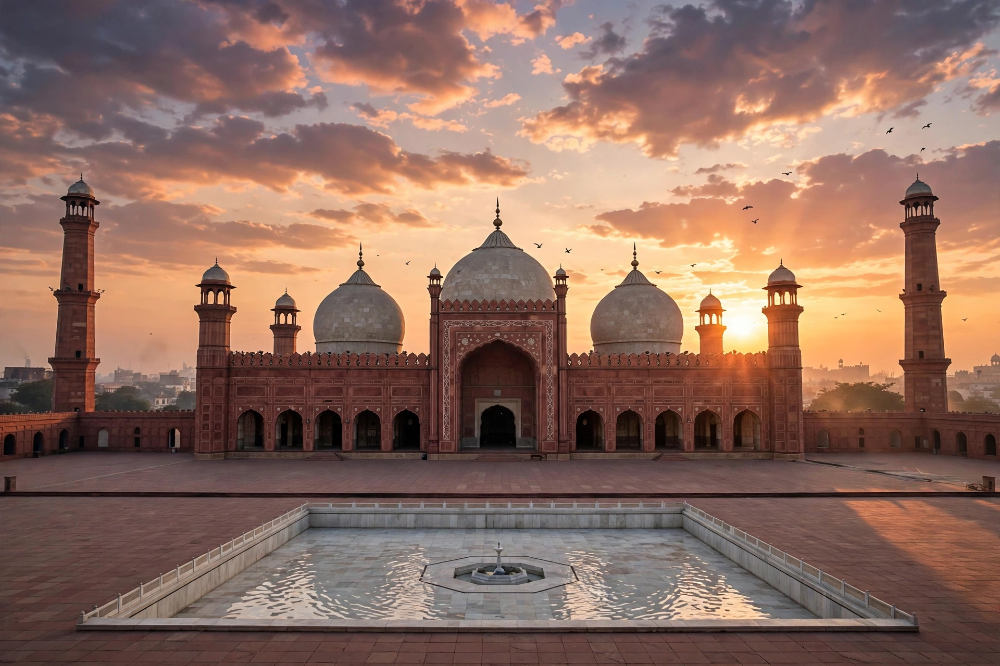

| Country | Pakistan |
|---|---|
| Capital and largest city | Lahore |
| Area | 205,344 km² |
| Population (2023) | ~127.7 million |
| Languages | Punjabi, Urdu, Saraiki (south) |
| Other major cities | Faisalabad, Rawalpindi, Gujranwala, Multan, Sialkot |
| Established | 14 August 1947 (West Punjab); present form 1970 |

Punjab (Punjabi/Urdu: پنجاب) is a province of Pakistan, the country's most populous, with well over half of the national population. It comprises the western part of the historic Punjab region, named for the "five rivers" — Jhelum, Chenab, Ravi, Beas and Sutlej — that water its fertile plains. It borders the Indian states of Punjab, Rajasthan and Jammu and Kashmir to the east, Sindh to the south, Balochistan to the southwest and Khyber Pakhtunkhwa and the Islamabad Capital Territory to the northwest.
The region hosted the Indus Valley Civilisation (including Harappa), the ancient university city of Taxila, and successive Hindu, Persian, Greek, Muslim and Sikh polities. Under the Mughals, Lahore became an imperial capital; it later headed Ranjit Singh's Sikh Empire before British annexation in 1849. At the Partition of 1947 the British province was split along religious lines, and millions of refugees crossed in both directions amid widespread violence. Bahawalpur acceded to Pakistan, and the province took its present form in 1970 after the One Unit scheme was dissolved.
Punjab has the largest share of Pakistan's economy. Its irrigated agriculture — one of the world's largest canal systems — produces cotton, wheat, rice, sugarcane and maize, and it is called Pakistan's breadbasket. Industry centres on textiles, sports goods (Sialkot), surgical instruments, cement and fertiliser; Lahore, Faisalabad and Karachi-linked manufacturing dominate output. Remittances from a large overseas workforce are also significant.
The province is the centre of Punjabi language and literature, Sufi shrines and festivals (urs), qawwali music, and Lahori cuisine. Major sites include the Lahore Fort and Shalimar Gardens (UNESCO), the ancient ruins of Taxila and Harappa, and Multan's Sufi tombs.